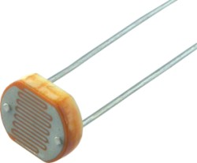

1.6.3. Фоторезисторы

Фотопроводимость полупроводников может обнаруживаться в инфракрасной, видимой или ультрафиолетовой частях электромагнитного спектра в зависимости от ширины запрещенной зоны, которая, в свою очередь, зависит от типа полупроводника, температуры, концентрации примесей и напряженности электрического поля.
Рассмотренный механизм поглощения света, приводящий к появлению свободных носителей заряда в полупроводнике, называют фотоактивным. Поскольку при этом изменяется проводимость, а следовательно, внутреннее сопротивление полупроводника, указанное явление было названо фоторезистивным эффектом. Основное применение фоторезистивный эффект находит в светочувствительных полупроводниковых приборах – фоторезисторах.
Фоторезистором называют полупроводниковый резистор, сопротивление которого чувствительно к электромагнитному излучению в оптическом диапазоне спектра.
Важнейшие параметры фоторезисторов:
- интегральная чувствительность — отношение изменения напряжения на единицу мощности падающего излучения (при номинальном значении напряжения питания);
- порог чувствительности — величина минимального сигнала, регистрируемого фоторезистором, отнесённая к единице полосы рабочих частот.
Обозначение фоторезистора на электрических схемах →
Устройство фоторезистора
Рассмотрим общую структуру обычного фоторезистора и его работу. Конструктивно фоторезисторы – это пленки или пластины из полупроводящего материала на диэлектрической подложке (Рис. 6.2). Для изготовления фоторезисторов используют полупроводниковые материалы с шириной запрещенной зоны, оптимальной для решаемой задачи. Так, для регистрации видимого света используются фоторезисторы из селенида и сульфида кадмия, Se. Для регистрации инфракрасного излучения используются Ge (чистый или легированный примесями Au, Cu или Zn), Si, PbS, PbSe, PbTe, InSb, InAs, HgCdTe, часто охлаждаемые до низких температур. Полупроводник наносят в виде тонкого слоя на стеклянную или кварцевую подложку или вырезают в виде тонкой пластинки из монокристалла. Слой или пластинку полупроводника снабжают двумя электродами и помещают в защитный корпус.
Рис. 6.2. Схематическое изображение структуры фоторезистора.
Поток фотонов, падающих на полупроводник, вызывает появление пар электрон-дырка, увеличивающих проводимость (уменьшающих сопротивление), т.е. под действием света меняется сопротивление. Это явление называют внутренним фотоэффектом (эффектом фотопроводимости). Фоторезисторы часто характеризуются зависимостью тока i от освещенности Е при заданном напряжении на резисторе. Это так называемая люкс-амперная характеристика (Рис. 6.3)
Рис. 6.3. Люкс-амперная характеристика фоторезистора.
Изменение силы тока выражается формулой: ΔI = ηqNλG ,
где: η - квантовая эффективность; q - заряд электрона; Nλ - число фотонов, излучаемых с длинной волны λ и поглощаемых за секунду в единице объема; G - коэффициент внутреннего усиления.
Применение фоторезисторов
Основной областью применения фоторезисторов является автоматика. Обладая повышенной допустимой мощностью рассеивания по сравнению с некоторыми типами фотоэлементов, фоторезисторы позволяют создавать простые и надежные фотореле без усилителей тока. Такие фотореле незаменимы в устройствах для телеуправления, контроля и регулирования, в автоматах для разбраковки, при сортировке и счете готовой продукции, для контроля качества и готовности самых различных деталей. В измерительной технике фоторезисторы применяются для измерения высоких температур, для регулировки температуры в различных технологических процессах. Контроль уровня жидкости и сыпучих тел, защита персонала от входа в опасные зоны, контроль за запыленностью и задымленностью самых различных объектов, автоматические выключатели уличного освещения и турникеты в метрополитене – вот далеко не полный перечень областей применения фоторезисторов. Фоторезисторы нашли применение и в компьютерной технике (датчики освещенности мониторов). В настоящее время трудно найти такую отрасль народного хозяйства, где бы они не использовались в целях повышения производительности труда, улучшения качества продукции и облегчения труда человека.